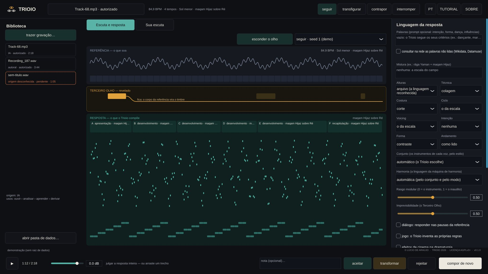

Trioio
Trioio is an instrument that listens. You bring a reference — a recording of yours, the output of another instrument, an authorised track — and it recognises its pulse, harmony, melody and musical language. Then it composes a response of its own, synthesised from scratch, and learns from your judgement.
Download
Version 0.1.0 is a preview: the instrument does the essential and remains open, in development. Choose the package for your system.
Windows
Windows 10 or 11 — installer (.exe) or no install (.zip)
macOS
macOS 10.15 or later, Intel and Apple Silicon
Linux
.deb for Ubuntu, Debian and Mint; AppImage or .tar.gz for other distributions
On first launch, Windows and macOS show a security warning: it is expected, because the app does not carry the two companies' paid signature. The installation guide says where to click.
Listening and response
Authorise
Every reference enters through the Library with its provenance: who made it, by what right, for which uses. Without authorisation, nothing is analysed or derived.
Listen
Trioio reads the pulse and the metre, the chords and the key, the melody inside the mix and the language — maqam, rāga, mode, flamenco… — through the archive of scales it wrote itself.
Respond
In four modes — follow, transfigure, oppose, interrupt — it composes motif, phrases, form and harmony, and synthesises them with timbre families of its own. Nothing is a sample: everything is synthesis.
Judge
You accept, transform or reject the response, whole or by passage. The judgement becomes memory: it pulls or pushes tendencies, without locking the instrument into a taste.
The Third Eye
The first eye takes part; the second observes; the Third Eye perceives the structure and may transform it. In Trioio it intervenes in the response — a sound object, a hidden rule — and some interventions leave consequences that run to the end. It stays hidden until you have listened: listening comes before explanation.
Languages and cultures
Trioio carries an archive of scales and cycles it wrote itself from published knowledge, citing the source of every entry as in research — no third-party archive is copied.
- 2576 scales: Greek genera, historical temperaments, just intonation, maqamat, rāgas and melakartas, gamelan, the modes of north-eastern Brazil, Messiaen and others;
- 32 of them carry the behaviour of the language: ascent and descent, resting tones, signature phrases, cadences, ornaments and texture;
- 26 rhythmic cycles: iqa', tala, usul and aksak, claves, gamelan colotomy, flamenco compás, baião;
- mixtures between cultures — collage, hybrid, layers, transition — with seams between the sections.
- the harmony machine: 25 languages — from functional harmony and jazz to the Brazilian ones (Hermeto, Villa-Lobos, Moacir Santos, Guinga, Gismonti, frevo, maracatu), the modern ones and Partch's microtonality —, with four-part voice leading;
- 15 ensembles — choro, samba, jazz, forró, tango, rock, orchestra, a cappella… —, each voice with the instrument and the figure of the style.
Example: in a recording with the Andalusian cadence (Dm–C–B♭–A), Trioio recognises A Phrygian dominant and responds, depending on the seed, in maqam Hijaz — heterophony, maqsum cycle — or in the Andalusian mode on E — chords, 12-beat compás. In Hijaz, without chords, the movement comes from sayr: the melody visits the neighbouring maqam on the ghammaz and returns.
Words, influences and gesture
Words
Write, if you like, a few words about the response — in any language, with or without accents, with typing mistakes. Trioio reads the intention, the form and the dance, and shows what it understood. Left blank, it follows its own criteria.
The network, optional
Words Trioio does not know can be looked up in public services (Wikidata, Datamuse). The calculation is its own: the services only return words. It comes switched off, because the words leave the computer.
The influence tree
Styles are not drawers: they are branches of an open tree, with social, historical, technological and generational contexts, and traits that are tendencies, never rules. Trioio crosses distant branches to reach the unexpected; the poetics of artists and bands are written by the musician.
The gesture
Draw the intensity curve of the piece, and the response follows that shape.
The app includes a tutorial in four languages, from the first step to a first exercise.
The interface

Provenance
Every reference has a manifest: origin, basis, authorised uses, history. Trioio only derives from what was authorised for derivation, and every response records where it came from. Code reused from other RASGO instruments — Rasgo Synth, Rasgo Modular, Antitotem, Aquorbium — is a pinned copy, with source commit and checksums.
Credits
Lúcio de Araújo — concept, composition, listening, interface and code. Licence GNU AGPLv3 or later; JUCE under its AGPLv3 option. Full sources and credits: CREDITS_AND_SOURCES.md.
Status
Version 0.1.0 is a preview. The Windows and macOS packages are built and tested by continuous integration but have not yet been opened by the author on real machines; Linux is also launch-tested on four distributions. The instrument remains in development, open.